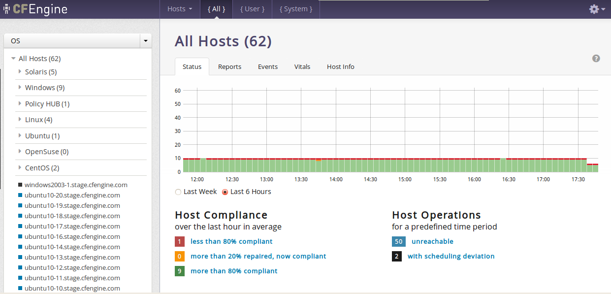
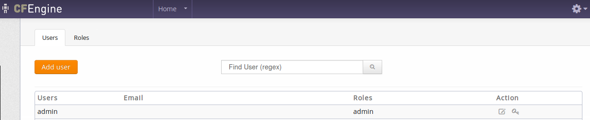
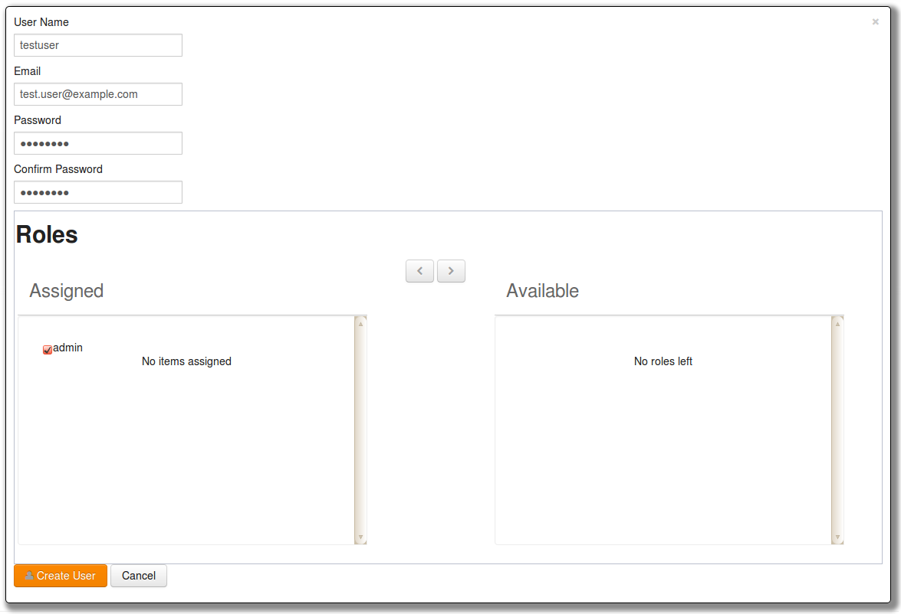
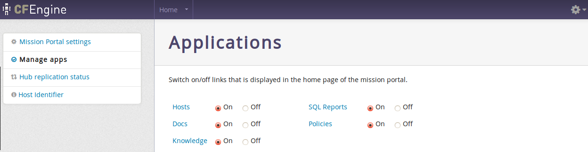
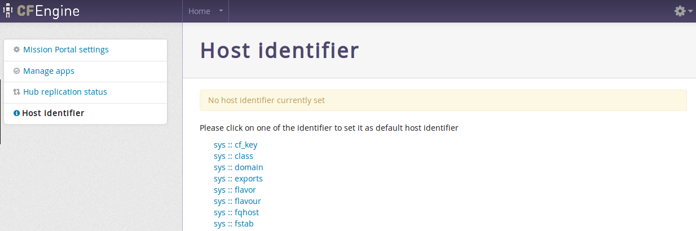
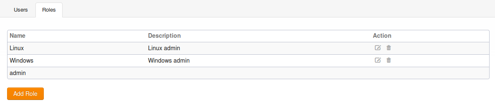
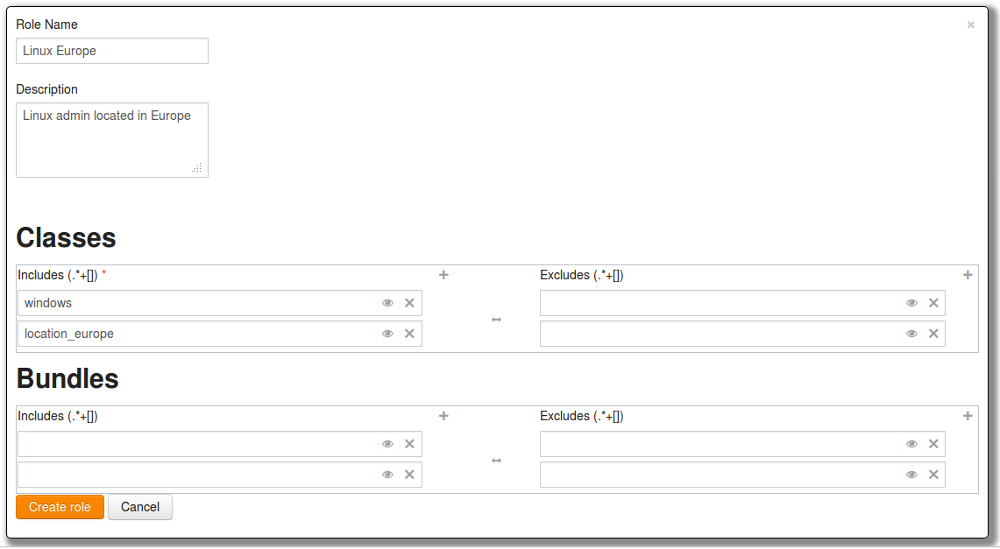

Welcome to CFEngine Enterprise 3.0, the next generation of enterprise configuration management software! This document will take you through the necessary steps to get CFEngine Enterprise 3.0 up and running and show additional features of CFEngine Enterprise compared to CFEngine Community. The following links will take you to commonly used sections, see above for a complete table of contents:
We have made big changes to the Mission Portal to accommodate the needs of infrastructure engineers and IT managers alike. The front page consists of a list of applications, or apps, that give insight into different aspects of your infrastructure. Focus on a more intuitive UI with enhanced help functions has made the Mission Portal both easier and more powerful to use.
CFEngine 3 Free Enterprise is our commercial enterprise product offered for free for up to 25 managed hosts. It differs from our commercial offer in that it has different licensing terms, different support and it is limited to a maximum of 25 hosts. This product is described in full detail at http://cfengine.com/enterprise-download. Please note that CFEngine Enterprise should not be installed as an upgrade to CFEngine Community. In that case uninstall CEngine Community, do a clean install of CFEngine Enterprise and then move your existing policies to the new Enterprise hub. See the Enterprise FAQ for more information.
CFEngine Enterprise is a commercially licensed version of the core CFEngine software1 with enterprise library extensions. All of the documentation for CFEngine 3 applies to CFEngine Enterprise.
The aim of CFEngine Enterprise is to offer a knowledge-enhanced framework for configuration management that goes beyond mere technical configuration to support the needs of businesses. Features include compliance management, reporting and business integration, and tools for handling necessary complexity. CFEngine Enterprise has features to support Cloud Computing for public and private clouds, as well as greater integration facilities with database resources.
The default CFEngine Enterprise architecture uses a single hub, or policy server, to publish changes of policy and to aggregate knowledge about the environment, but you can set up as many as you like to manage different parts of your organization independently. The CFEngine technology is not centralized by nature. Most users choose to centralize updating of policy and report aggregation for convenience however.
The default architecture and configuration skeleton of CFEngine Enterprise is expected to scale to a few thousand hosts with a dedicated policy hub. For the hub (policy server) we recommend that you have at least 2 GB of memory and a modern 64 bit cpu. For a large number of clients we recommend, as a rule of thumb, to have 8 GB of memory available per 500 hosts bootstrapped to the hub. Please contact your sales representative if you have any questions regarding these numbers.
For machines under CFEngine's management (clients), a full installation of CFEngine Enterprise requires about 25 MB of disk storage. Otherwise disk usage depends on your specific policies, especially those that concern reporting. Each software component (agent) typically uses under 10 MB of memory, but spikes in memory usage can occur if several agents run simultaneously. CFEngine recommends to have at least 256 MB available memory on the clients.
CFEngine can be made to run on most operating systems. For efficiency CFEngine only supports packages for a number of recent popular operating systems, which should be up to date with patches. If we don't have packages for your particular operating systems we can usually make packages by special arrangement, please contact your sales representative.
CFEngine 3 Free Enterprise is only available for Linux Operating Systems (both hub and client). Commercial CFEngine Enterprise customers have access to all the Operating Systems listed in <VERSION-NUMBER>-Release_Notes_CFEngine_3_Enterprise.txt (found in the software download directory on cfengine.com).
| See <VERSION-NUMBER>-Release_Notes_CFEngine_3_Enterprise.txt (found in the software download directory on cfengine.com) for details on supported architectures. |
The hub (policy server) is only available for derivatives of the top GNU/Linux distributions (Debian, Red Hat, SuSE, Ubuntu), as these make available software that the hub relies on for data storage and processing.
CFEngine Enterprise provides a version of CFEngine running natively on Windows, with support for registry management, Windows services and file security, See Windows-specific features in CFEngine Enterprise. Support for Solaris zones has been added through automated zone detection and process model adaptation.
A working package manager is required on the hub/policy server to install an Apache Web Server, php module, MongoDB, etc. You should start from a blank system (i.e. with none of these components installed) to avoid potential interference with the installation process. No special software is otherwise required on machines in your network, CFEngine bundles all critical dependencies in the CFEngine Enterprise package.
CFEngine Enterprise is designed to be simple to install in its default configuration. The installation process has two phases (or three phases for commercial customers who need to obtain a license):
The following procedure counts for a fresh install, please see Upgrading CFEngine Enterprise for how to upgrade from earlier versions of CFEngine.
You should start from a blank system (see also Hardware requirements). If you have been using CFEngine Community Edition and you have already developed a policy, set aside this policy during the installation process. You will be able to integrate it back later.
| CFEngine Enterprise 3.0 is provided in three packages (two hub packages and one client package), please make sure to install them on the corresponding machines (e.g. one machine intended to serve as hub (policy server) and other machines intended to serve as clients). |
These are the three packages (inside the respective hub and client directories found under each platform in the software download directory):
The difference between the hub and client cfengine-nova-3.0.xxx packages is that the agent binaries for the hub are linked to the MongoDB library while the binary for clients are not. Installing a client package on the hub will result in a database connection error, the Mission Portal will not be available and reports will not be collected. Installing the hub package on clients will result in error reports stating that the agent failed to connect to MongoDB (because it is not existent in client packages; danger of filling up error logs), but otherwise functionality will be assured. Please take care to install the correct packages on the corresponding nodes.
References to package managers assume that additional packages might need to be installed on the hub (policy server). Root privilege is required for the installation.
A common problem is that iptables are active by default on some operating systems. Remember to stop this service or adapt it to allow for communication on the above ports. If applicable:
$ /etc/init.d/iptables stop
$ chkconfig iptables off
|
On the hub, verify that package managers yum,
zypper or apt-get are working. They will be used to
install a web server, database and php server. If you are not able to set up a package manager and
repository on the hub, please see How do I install the prerequisites for the hub manually?
cfengine-nova-3.0.xxx.[rpm|deb] (NOTE: use hub package)
cfengine-nova-expansion-3.0.xxx.[rpm|deb]
On all other machines:
cfengine-nova-3.0.xxx.[rpm|deb] (NOTE: use client package)
host# rpm -ihv packages
host# rpm -ihv packages
host# dpkg --install packages
| Save the returned license file to /var/cfengine/masterfiles/license.dat on the hub before continuing. |
Find the hostname or IP address of the hub (policy server), here we assume ‘123.456.789.123’ is the address.
hub # /var/cfengine/bin/cf-agent --bootstrap --policy-server 123.456.789.123Use the same command on all hosts, i.e. do not bootstrap the policy server with a localhost address. If you mistype the address of the hub, we recommend doing the following steps to re-boostrap.
hub # /var/cfengine/bin/cf-agent --bootstrap --policy-server 123.456.789.124
hub # killall cf-execd cf-serverd cf-monitord cf-hub
hub # rm -rf /var/cfengine/inputs/*
hub # rm -f /var/cfengine/policy_server.dat
hub # /var/cfengine/bin/cf-agent --bootstrap --policy-server 123.456.789.123
CFEngine will output diagnostic information upon bootstrap (written to command line and syslog; cf-agent will also return a value: ERROR: 1, SUCCESS: 0). Error messages will be displayed if bootstrapping failed, pursue these to get an indication of what went wrong and correct accordingly. If all is well you should see the following in the output:
-> Bootstrap to 123.456.789.123 completed successfully
See Troubleshooting - Problems bootstrapping if you have issues with this step.
| Commercial customers: Did you bootstrap before obtaining a license? See I did bootstrap the hub before obtaining a license file - what should I do? |
cf-execd running, and eventually other processes from
the CFEngine suite like cf-monitord cf-serverd. On the hub, you should
also eventually see cf-hub. Note that it may take 5–10 minutes before all the
processes get started.
Please see Frequently Asked Questions or Troubleshooting if you have any problems.
The Mission Portal is the centerpiece of user interaction with CFEngine Enterprise. It can be accessed by connecting to the hub (policy server) with your web browser (from the installation example: http://123.456.789.123, replace with your real IP address). You should see a login page, the default user name and password is admin and admin. 4 Once you have logged in you will see the Mission Portal home page:
By default there are only three applications, or apps, shown on the home page (the above image also shows the Policy and Knowledge apps, these can be made visible by enabling them in Settings). Each app offers insight into different aspects of operations:
In addition all Mission Portal apps have a top menu containing at least the App Selector on the left and the Settings Menu on the right:
The apps labeled beta are under development and may not have a complete functionality set. We still choose to include them in the product to show the potential of CFEngine Enterprise and get feedback from our customers. A Mission Portal administrator can configure which apps will be available to other users through Settings.
If you go on directly to explore the different apps, please note that some of the displays in the Mission Portal may be blank when you log in just after installation. It may take some time for the system to fully converge, do not get troubled if initially there are some promises repaired or not kept (yellow and red colors).
The following will take you through the different Mission Portal apps and settings.
The Hosts App illustrates the state of the system in relation to the desired state at different scales. Zoom in to specific areas and examine the impact of promises, query data, extract reports and examine compliance relative to the policy/promises you have made. Speak authoritatively on resources and avoid the cost of maintaining disconnected monitoring/reporting.

The app has three main areas of user interaction:
In general we use colors to show the status of host compliance and operational status:
cf-agent has not executed policy normally for the last three runs. This could be due to CFEngine's scheduling daemon, cf-execd, not running or an error in policy which aborts execution. The hub will still able to contact the client to collect reports but the client will return stale data since it has not completed runs at regular intervals.
The Policy Context Selector affects all content related to host and promise status in the Hosts App. There are three alternatives:
System promises reside in bundles whos name is prefixed by cfe_internal_. Their promise handle names are also prefixed by cfe_internal_. Bundles/promise handles that do not have this prefix will be categorized as User bundles/promises. All shows the union of User and System bundles/promises.
In addition, the cf-agent verbose output of promise compliance has changed format to accomodate the policy context feature:
nova> Outcome of version Promises.cf 2.2.3 (agent-0): Promises observed to be kept 100%, Promises repaired 0%, Promises not repaired 0%
enterprise> Outcome of version Promises.cf 3.0.0 (agent-0): Promises observed - Total promise compliance: 100% kept, 0% repaired, 0% not kept (out of 6418 events). User promise compliance: 100% kept, 0% repaired, 0% not kept (out of 29 events). CFEngine system compliance: 100% kept, 0% repaired, 0% not kept (out of 6389 events).
The promise_summary.log file has undergone similar format changes to include results for the different policy contexts.
The Navigation Tree allows the user to group and organize hosts in a hierarchy defined by CFEngine classes (boolean classifiers that describe context).
The tree consists of two main parts:
X next to a tree name to delete it.
X shown beside the node.
Pencil icon shown beside the node.
The trees and nodes that a user creates will not be visible to other users of the Mission Portal.
Click on any host in the tree to get a quick overview of that host in the Status, Vitals or Hosts Info tabs.
The Status tab shows the overall status of the hosts selected in the Navigation Tree and selected policy context ({All}, {User} or {System}).
This section contains:
Reports are sorted into five main categories that contain drop down menus to select default reports. All reports except Accounting > Benchmarks and Accounting > Business value are context sensitive, i.e. will change based on your selection in the navigation tree and the policy context selector. Clicking a report will bring up a search filter specific to that report.
Reports are updated at different intervals, the default values are every 5 minutes or every 6 hours. Below is a list of standard reports, updated every 5 minutes unless otherwise noted:
The Events tab allows you to create trackers to follow selected promises or classes. The trackers are in real time and shows data as it is written to the database. They represent an easy way to monitor specific promises or trace the impact of policy changes and roll outs at a more detailed level. A classes tracker will list the hosts that satisfy the selected class.
CFEngine has integrated monitoring capability where many parameters are measured on each client. These are presented visually in the Vitals tab. All parameters are listed if a single host is selected, otherwise the hosts are ranked according to a selected parameter.
See also Monitoring extensions.
The Host Info tab is an inventory listing of discovered properties about a host. Includes host identity, operating system, architecture, CPU, interfaces, etc.
The SQL Reports app gives the user full flexibility to create reports based on a simple customizable SQL interface. The workflow consists in choosing what fields you want to see in the report and how to filter them. You also have the option to save queries for later use or schedule queries to email reports to stakeholders. Be ready for instantaneous audits and inspections at low cost by reducing the time and work to gather reports.
There are two main areas of interaction in this app:
Items in the content area are used to create a query and generate reports according to the following description:
| Please note that any queries containing the PromiseDefinitions table in combination with any other table in the schema will produce erroneous output without an intermediate join to the PromiseStatusLast table. See SQLite Database Schema. |
| Please note that manual edits of the SQL query in the Show me the query field will invalidate input from the UI wizard. Conversely, any manual edit will be overwritten if you make changes in the UI wizard. |
Once the query is defined you can run it to see the result, optionally save it for later use or schedule it to be emailed at a chosen interval. The report will appear below the UI wizard if you choose to run the query directly (limited to the number of entries chosen in the Limit field):
The Docs app gives access to both offline and online CFEngine documentation. The documents are scanned and parsed to be included in the integrated semantic index (see Knowledge App). Look up on the fly or study in depth. Learn about CFEngine concepts, syntax and inherent possibilities in CFEngine.
The left side shows an overview of all bundled documents, divided into categories that expand once clicked. The selected document is displayed in the main content area to the right.
| Please note that this is a beta app: it is under development and has basic intended functionality, but may have bugs and an incomplete functionality set. |
The Policies app shows the promises that the system is currently trying to keep, with links to CFEngine's smart indexing and documentation. Show statistics about the quality and success of the intended state. Stay close to the intended state of your system, by knowing what, where, when, how and why your infrastructure is defined, deployed and configured.

The four tabs on the right content side give further insight into what the bundles on the left contain:
| Please note that this is a beta app: it is under development and has basic intended functionality, but may have bugs and an incomplete functionality set. |
The Knowledge app embodies CFEngine's knowledge index, used to find answers and document references and reports. Use CFEngine's automated analysis of policy, collected data and local knowledge to comprehend your tools and infrastructure with greater authority.
On the left you find a search field and a menu with foldable generic categories and list of documents and their content titles/headers. The right side presents the map itself, with references to the selected topic underneath. The map displays visual relations to other topics and is clickable, navigate and learn how topics are connected. The See also tab presents semantic links to other topics that might be related, as well as references to the selected topic.
On a fresh install the default user admin belongs to the admin user group and has access everything in the Mission Portal. The admin user can add users to the internal database, set up external authentication and define roles to limit access.
The following shows how to add, edit and delete users from the internal database. See the respective sections, Configuration of external authentication and Role Based Access Control (RBAC) for advanced user management.

Click the Add User button to add a new user to the internal database:

Enter the user information as requested in the fields. If user roles have been defined (see Role Based Access Control (RBAC)), you can also choose to assign one or more roles to the user by selecting an available group and clicking the '<' button located between the list of assigned and available roles. Finish by clicking Create User.
Users can be edited in the same way as above by clicking the Pencil button next to his or her user name.
| For resetting user passwords, please note that the Mission Portal will attempt to email the new password to the user. If this fails, the Mission Portal will display the new password on screen after the email server has given the fail message. Please note that this might take a while, you should verify that the recipient has gotten the email before moving on. If the password is displayed on the screen you will need to convey it to the user manually and check your Mission Portal email settings (see Other Settings). |
The information a user is authorized to see is determined from his or her role memberships. A user may be member of an arbitrary number of roles, each which may grant and deny access to certain information. User-authentication is carried out when users log on to the Mission Portal, see also Role Based Access Control (RBAC).
Mission Portal settings allow the user to set and configure the following items:
Authentication method
External authentication (LDAP or Active Directory) is available for CFEngine 3 Nova 2.1 and later versions. See Configuration of external authentication for how to set this up.
Role-Based Access Control
Unreachable host threshold
Turn on/off the Analytics feature
Set the Enterprise API log level - Corresponds to the standard syslog levels.
Upload you company logo
Determine which apps should be active (on) or inactive (off) in the Mission Portal. The Policy and Knowledge apps are turned off by default. These are global settings that affect all users.

Shows status of hub replication if it has been set through policy. Contact your sales representative if you wish help with setting this up.
The Host Identifier is used to choose what attribute will be used to identify hosts that are not directly addressable from the hub (e.g. hosts behind a network address translator (NAT) or where two-way initialization of communication is generally denied). See Call-Collect.

These settings are not availble through the Mission Portal, but can be accessed through files in the web document root on the hub. They are related to default save path for CSV/PDF reports, timeout for exported report generation, Mission Portal email configuration, URL for the Enterprise REST API and default title for scheduled reports.
User defined constants"). You can specify:
The complete list of options for <DOCROOT>/application/config/email.php are as follows:
<pre>
<?php if ( ! defined('BASEPATH')) exit('No direct script access allowed');
/*
* method used to send email
*/
$config['useragent'] = 'cfengine'; // The "user agent".
$config['protocol'] = 'mail'; // The mail sending protocol. Values: mail, sendmail,
or smtp.
$config['mailpath'] = ''; // The server path to Sendmail.
$config['smtp_host'] = ''; // SMTP Server Address.
$config['smtp_user'] = ''; // SMTP Username.
$config['smtp_pass'] = ''; // SMTP Password.
$config['smtp_port'] = ''; // SMTP Port, f.e. 25
$config['smtp_timeout'] = ''; // SMTP Timeout (in seconds). f.e. 5
$config['wordwrap'] = TRUE; // Enable word-wrap. Values: TRUE or FALSE (boolean).
$config['wrapchars'] = 76; // Character count to wrap at. f.e. 76
$config['mailtype'] = 'text'; // Type of mail. values: text or html
$config['charset'] = 'utf-8'; // Character set (utf-8, iso-8859-1, etc.).
$config['validate'] = TRUE; // Whether to validate the email address. Values: TRUE
// or FALSE (boolean)
$config['priority'] = 3; // Email Priority. 1 = highest. 5 = lowest. 3 = normal.
// Values: 1, 2, 3, 4, 5
$config['crlf'] = '\r\n'; // Newline character. (Use "\r\n" to comply with RFC 822).
// Values: "\r\n" or "\n" or "\r"
$config['newline'] = '\r\n'; // Newline character. (Use "\r\n" to comply
// with RFC 822). Values: \r\n" or "\n" or "\r"
$config['bcc_batch_mode'] = FALSE; // Enable BCC Batch Mode. Values: TRUE or
// FALSE (boolean)
$config['bcc_batch_size'] = ''; // Number of emails in each BCC batch. f.e. 200
?>
</pre>
Email configuration example:
<?php if ( ! defined('BASEPATH')) exit('No direct script access allowed');
/*
* method used to send email
*/
$config['protocol'] = 'smtp';
$config['smtp_port'] = '25';
$config['user_agent']='cfengine';
$config['smtp_host']='10.10.10.10';
$config['smtp_user'] = 'user';
$config['smtp_pass'] = 'password';
$config['smtp_crypto'] = 'tls';
$config['charset'] = 'iso-8859-1';
$config['wordwrap'] = TRUE;
?>
Role-Based Access Control (RBAC) limits user access to the Mission Portal settings page and access to hosts, reports and promises in the different Mission Portal Apps. RBAC can be globally switched on or off in the Mission Portal settings (see Mission Portal Settings).
On a fresh install the default user "admin" belongs to the "admin" user group and has access everything in the Mission Portal. The "admin" user can add users to the internal database, set up external authentication (see Configuration of external authentication) and define roles to limit access.
A role is defined as reporting
access to a set of hosts and promise bundles from the Mission Portal
and REST API. This does not give any rights with respect to changing
the content or execution of the policy. It should not be confused with
the roles promise-type that can be used by cf-runagent
and cf-serverd.

Click the Add Role button to add a new user role to the Mission Portal:

Roles can be defined on either classes or bundles and involves setting permissions through an include and exclude list for each. The effective permissions of a user is the cumulative set of permission granted or denied by his roles, and is used to filter the information displayed in the following way:
In order to scale, both entities are defined as a set of regular expressions to allow and deny.
Access to hosts is defined by regular expressions on classes, not the hostname, ip, or any other name. This is done to ensure maximum scalability. Classes can be arbitrarily defined in the CFEngine policy language, so this incurs no loss of flexibility, but ensures distributed computation.
In contrast to users, a role definition and membership can only be obtained from the internal Mission Portal database. This means that any roles must be defined through the Mission Portal web interface, and can not be obtained from e.g. LDAP at this time. The rationale is that querying complex LDAP structures for role membership is too inefficient and error-prone. This may change in future releases, if requested. Note that the possible members of a role can be obtained from other sources, as described in the section on user administration. However, assigning possible members to roles must be done through the Mission Portal user-interface.
The above discussion showed that RBAC is supported on the host and promise bundle level, each applying to different parts of the Mission Portal. Both these entities are atomic with respect to RBAC — either a user can see everything they contain, or nothing of it.
Access to a host is required to see any information about it, e.g. all its reports, host information, and compliance category. If a user is not allowed access to a host, the Mission Portal would look the same as if the host was not bootstrapped to that hub.
Information about the running policy is also available in the Mission Portal, either through the Promise Finder or by clicking a promise handle from one of the reports. The searchable promises in the Promise Finder and information pages about promises and bundles are filtered in the same manner as the hosts, but defined based on promise bundles instead.
Note that the host and promise filtering is independent — no attempt is made to try to infer which promises a role should have access to based on the hosts it has access to or vice versa.
cf-report from the command-line on the hub will
bypass all RBAC checks.
Virtualization refers to the ability to run multiple host instances on a single physical node. Cloud computing typically refers to what is called `platform as a service', or deployment of virtual machines on demand, often as an on-line service.
In this document, virtualization support refers specifically to hypervisor technologies supported by the open source library layer libvirt project, which includes interfaces for Xen, KVM, VMware-ESX, and more. CFEngine thus integrates freely with other tools based on this library, such as virsh and the Virtual Manager graphical user interface.
Virtualization engines (usually called supervisors or hypervisors) are seeing an explosion of development. They exist as a number of projects in various stages of maturity. The libvirt project was designed as an integration layer based on an XML specification.
The tools for management are still quite primitive and require much manual work. CFEngine has a unique role to play in maintaining desired state in virtual machine systems.
In the cloud, virtual machines may be rented from remote commercial providers, and managed as disposable resources. Convergent or `self-healing' maintenance is an essential method for managing machines that are geographically remote and awkward to access, e.g. machines in other time-zones that it is impractical to monitor by legacy methods.
The simple answer is: most things that libvirt can do, with added convergence to a desired state: that means, creating, destroying and starting and stopping machines. By starting virtual machines through CFEngine, you can be sure that a given `virtual guest' is running on one and only one physical host, thus avoiding conflicts that are difficult to detect with centralized systems.
CFEngine does not support everything that libvirt does – it offers a simplified interface that is meant for robustness, stability and hands-free repeatability.
| CFEngine does not use libvirt's TLS based web communication layer. It manages every host as an independent entity, in typical CFEngine fashion, using CFEngine's own distributed cooperation to provide the implicit communication. CFEngine does not currently support so-called `live migration' of virtual machines. |
A virtual machine is one example of what CFEngine calls an `guest environment'. You can promise to create (and host) an guest environment with certain attributes, just as you can promise to host a file or a process. Here is a simple example:
body common control
{
bundlesequence => { "my_vm_cloud" };
}
#######################################################
bundle agent my_vm_cloud
{
guest_environments:
"myUbuntu" # the running instance name, defined in XML
environment_resources => virt_xml,
environment_type => "xen",
environment_host => "my_physical_computer", # ipv4_10_1_2_3
environment_state => "create";
}
#######################################################
body environment_resources virt_xml
{
env_spec_file => "/srv/xen/centos5-libvirt-create.xml";
}
environment_host and CFEngine assumes that
rest. Unique classes might include
myhost_CFEngine_com
ipv4_123_456_789_123
An alternative way to write this example is to quote the XML specification in CFEngine directly. This has a few advantages: you can re-use the data and use it as a template, filling in CFEngine-variables. You can thus adapt the configuration using CFEngine's classes.
bundle agent my_vm_cloud
{
guest_environments:
"myUbuntu" # the running instance name, defined in XML
environment_resources => virt_xml("$(this.promiser)"),
environment_type => "xen",
environment_host => "myphysicalcomputer";
environment_state => "create"
}
#######################################################
body environment_resources virt_xml(host)
{
env_spec_file =>
"<domain type='xen'>
<name>$(host)</name>
<os>
<type>linux</type>
<kernel>/var/lib/xen/install/vmlinuz-ubuntu10.4-x86_64</kernel>
<initrd>/var/lib/xen/install/initrd-vmlinuz-ubuntu10.4-x86_64</initrd>
<cmdline> kickstart=http://example.com/myguest.ks </cmdline>
</os>
<memory>131072</memory>
<vcpu>1</vcpu>
<devices>
<disk type='file'>
<source file='/var/lib/xen/images/$(host).img'/>
<target dev='sda1'/>
</disk>
<interface type='bridge'>
<source bridge='xenbr0'/>
<mac address='aa:00:00:00:00:11'/>
<script path='/etc/xen/scripts/vif-bridge'/>
</interface>
<graphics type='vnc' port='-1'/>
<console tty='/dev/pts/5'/>
</devices>
</domain>
";
}
You should consult the libvirt documentation for the details of the XML specification.
CFEngine currently supports virtualization only through libvirt, so it supports those technologies that libvirt supports. Currently this includes most popular technologies. You must choose the type of monitor that is to be responsible for keeping the guest environment promise. In CFEngine, you should choose between a machine environment or network environment of the following types:
xenkvmesxtestxen_netkvm_netesx_nettest_netzoneec2eucalyptusOnce again, you must consult the libvirt documentation for details.
Libvirt recognizes a number of distinct states are transliterated into CFEngine as
createdeleterunningsuspendeddownenvironment_host class is true, and
suspended or down elsewhere.
Prerequisites: you need to make a `disk image' for the machine, or a virtual disk of blocks that can be allocated. This image does not have to contain any data, it will simply as a block device for the VM. You can then install it by booting the machine from a network image, like a PXE/kickstart installation.
If you want to allocate disk blocks as the file grows, you can create a file with a hole. The following command will creates a file of 2048MB, but the actual data blocks are allocated in a lazy fashion:
# dd if=/dev/zero of=/srv/xen/my.img oflag=direct bs=1M seek=2047 count=1To reserve all the data blocks right away:
# dd if=/dev/zero of=/srv/xen/my.img oflag=direct bs=1M count=2048
Libvirt uses an XML file format that cannot be circumvented. CFEngine
promises to honor the promises that are expressed in this file, as in
the examples above. You need to find out about this file format from
the libvirt website. To get CFEngine to Honor these promises, you
point it to the specification that it should promise using
spec_file.
You need to set up a network for virtual machines to communicate with the outside world. This can also be done with CFEngine, using the network promise types to build a bridge into a virtual network.
Then just run CFEngine to start, stop or manage the guest environments on each localhost. Run in verbose mode to see how CFEngine maintains the states convergently.
# cf-agent -v
In this section, we will explore the Windows-specific features of the native Windows version of CFEngine Enterprise, and how it integrates with Windows. We will also consider features that are more interesting or popular on Windows than on other platforms.
Feature highlights include Windows service management and integration, event logging, Windows registry repair, and fine-tuned file security support through access control lists. See the sections on databases and ACLs to find information on Windows registry repair and NTFS ACLs, respectively. We will look at some of the other added features next.
CFEngine Enterprise can maintain complete control of the state of all Windows services, in addition to Unix daemons. Services prone to security issues or errors can easily be given a disabled state.

A service can also be given a running state, in which case CFEngine 3 Enterprise ensures that it is running, and starts it if it is not, with parameters if desired. More advanced policy options are also available, including support for starting and stopping dependencies, and configuring when the services should be started (e.g. only when they are being used).
Furthermore, the CFEngine executor in CFEngine Enterprise now runs as a Windows service itself. This means it runs in the background an starts with Windows, before any user logs in. It can be configured, started and stopped from the “Services” listing in Windows.
Note that the name of a service in Windows may be different from its “Display name”. CFEngine Enterprise policies use the name, not the display name, due to the need of uniqueness.

Event logs are the Windows counterpart to syslog from Unix. The main difference is that event logs aim to group similar log messages, giving each group an event id.

A program that creates logs, such as CFEngine Enterprise, must define the possible event IDs, and their meaning. In many applications, only one event id is defined, a generic log message. However, CFEngine Enterprise defines the following range of event IDs, which allows for automatic handling of log messages.
| Description | Event ID | Type
|
|---|---|---|
| Promise kept | 100 | Information
|
| Promise repaired | 101 | Information
|
| Promise not repaired due warn only policy | 102 | Error
|
| Promise not repaired due to error | 103 | Error
|
| Report promise | 104 | Information
|
| Generic information | 105 | Information
|
| Generic verbose | 106 | Information
|
| Generic warning | 107 | Warning
|
| Generic error | 108 | Error
|

The CFEngine Enterprise event logs can be found under the “System” logs. Almost all monitoring products for Windows supports reading event logs, and they can thus monitor logs from CFEngine Enterprise as well. This makes it possible to do more advanced querying on the status of a machine running CFEngine Enterprise, e.g. to show all promises that have not been kept in a certain time interval. However, we recommend using the Knowledge Map to do more advanced things, as it is specifically made for this purpose and supports all operating systems that CFEngine runs on.
Three new special variables have been added to the Windows version of CFEngine Enterprise.
sys.windir contains the Windows directory,
e.g. “C:\WINDOWS”.
sys.winsysdir contains the Windows system directory,
e.g. “C:\WINDOWS\system32”.
sys.winprogdir contains the program files directory,
e.g. “C:\Program Files”.
Note that these variables are not statically coded, but retrieved from
the current system. For example, sys.winprogdir is often
different on Windows versions in distinct languages.
The Windows version of CFEngine Enterprise defines hard classes to pinpoint the exact version of Windows that it is running on, the service pack version and if it's a server or workstation.
First of all, the class windows is defined on all Windows
platforms. For Windows workstations, such as Windows XP,
WinWorkstation is defined. On Windows servers, such as Windows
Server 2003, WinServer is defined. In addition, if the server
is a domain controller, DomainController is defined. Note that
if DomainController is defined, then WinServer is also
defined, for natural reasons.
The class Service_Pack_X_Y is defined according to the service
pack version. For example, at the time of writing,
Service_Pack_3_0 is set on an updated Windows XP operating
system.
To allow taking specific actions on different Windows versions, one of the following hard classes is defined.
Windows_7
Windows_Server_2008_R2
Windows_Server_2008
Windows_Vista
Windows_Server_2003_R2
Windows_Home_Server
Windows_Server_2003
Windows_XP_Professional_x64_Edition
Windows_XP
Windows_2000
Note that all defined hard classes for a given system is shown by
running cf-promises -v.
A potential problem source when writing policies for windows is that paths to executables often contain spaces. This makes it impossible for CFEngine to know where the executable ends and the parameters to it starts. To solve this, we place escaped quotes around the executable.
Additionally, Windows does not support that processes start themselves in in the background (i.e. fork off a child process in the Unix world). The result is that CFEngine is always waiting for the commands to finish execution before checking the next promise. To avoid this, use the background attribute in the action body-part.
Both these things are demonstrated in the following example.
body common control
{
bundlesequence => { "main" };
}
bundle agent main
{
commands:
"\"C:\Program Files\Some Dir\program name.bat\" --silent --batch"
action => background;
}
body action background
{
background => "true";
}
Finally, one should note that Windows lacks support for certain features that are utilized in Unix versions of CFEngine. These include symbolic links, file groups, user and group identifiers.
Thus, the parts of promises containing these features will be
ignored. For example, the getgid() function does not return
anything on Windows. The reference manual documents exactly which
promises are ignored and not. Also, cf-agent from CFEngine
3 Enterprise prints warning messages on ignored attributes when run in verbose
mode.
The CFEngine Enterprise API allows HTTP clients to interact with the Hub of a CFEngine Enterprise 3.0 installation. With the Enterprise API, you can..
The Enterprise API is a REST API, but a central part of interacting with the API involves using SQL. This is new in 3.0 and was done to provide users with maximal flexibility for crafting custom reports based on the wealth of data residing on the Hub.
The Enterprise API is a conventional REST API in the sense that it has a number of URI resources that support one or more GET, PUT, POST, or DELETE operations. While reporting is done using SQL, this query is always wrapped in a JSON request.
GET requests are one of listing or getting. Listing resources means that a number of results will be returned, but each entry may contain limited information. An example of a listing query is /api/user to list users. Notice that URI components are always non-plural. An exception to this is /api/settings, which returns the singleton resource for settings. Getting a resource specifies an individual resource to return, e.g. /api/user/homer. PUT request typically create a new resource, e.g. a user. POST requests typically updates an existing resource. DELETE requests are also supported in some cases.
Enterprise 3.0 API responses are always of the following format, consisting of a meta object and a data array.
{
"meta": {
"page": 1,
"count": 1,
"total": 1,
"timestamp": 1350922925
},
"data": [
...
]
}
page refers to the current page number of the request. count is the number of results in the current page, equaling the length of the data array. total is the number of results in all available pages combined. timestamp is the time the request was processed by the API. The data array is resource dependent, but will always contain objects. Response objects typically do not contain error codes. If the response is not 200 OK, the appropriate HTTP error code returned along with a (possibly non-JSON) payload.
Pagination is handled by page and count query parameters to a GET request, e.g. /api/user?page=5&count=30 to get the 5th page of pages of 30 entries each. The default page is 1 and the default count is 50 if these are not specified explicitly.
All timestamps are reported in Unix Time, i.e. seconds since 1970.
The API supports both internal and external authentication. The internal users table will always be consulted first, followed by an external source specified in the settings. External sources are OpenLDAP or Active Directory servers configurable through POST /api/settings.
Some resources require that the request user is a member of the admin role. Roles are managed with /api/role. Role Based Access Control (RBAC) is configurable through settings. Users typically have permission to access their own resources, e.g. their own scheduled reports.
The 2.2 API was read-only and users, roles and settings was managed by the Mission Portal. By contrast, the 3.0 API is read/write and completely standalone from the Mission Portal. In the CFEngine Enterprise 3.0, users, roles and settings belong in the API, and the Mission Portal uses this to determine access to data. Additionally, some other resources support PUT, POST and DELETE, but most data collected from agents are read-only.
The 2.2 API provided an almost one-to-one correspondence between the reports in the Mission Portal and the API. One of the big changes in CFEngine Enterprise 3.0 is the advent of SQL reports. This is provided to the Mission Portal through the API, and you can use it too. You may issue both synchronous and asynchronous reporting requests, and optionally schedule reports to be received by email.
The 2.2 API has a HTTP content-type application/vnd.cfengine.nova-v1+json. In the 3.0 API the content-type is application/vnd.cfengine.enterprise-v1+json. This reflects a branding change away from Nova to Enterprise.
The 2.2 API used credentials from the Mission Portal database to authenticate and authorize users. These users have been moved into the Hub database and security has been strengthened. We are now using salted SHA256 passwords for the user table. Unfortunately, this means that internal users need to be recreated. The Mission Portal now relies on the API for authentication and authorization. This was partially done to support multi-hub installations.
The 2.2 API had a base path /rest. In the 3.0 API the base path is /api.
In 3.0, the old 2.2 API is still available along side the new 3.0 API, so you can keep calling the old API if needed.
Starting in 3.0, most of the API is exercised by the Mission Portal web-UI.
You can get basic info about the API by issuing GET /api. This status information may also be useful if you contact support, as it gives some basic diagnostics.
Request
curl -k --user admin:admin https://test.cfengine.com/api/
Response
{
"meta": {
"page": 1,
"count": 1,
"total": 1,
"timestamp": 1351154889
},
"data": [
{
"apiName": "CFEngine Enterprise API",
"apiVersion": "v1",
"enterpriseVersion": "3.0.0a1.81c0d4c",
"coreVersion": "3.5.0a1.f3649b2",
"databaseHostname": "127.0.0.1",
"databasePort": 27017,
"authenticated": "internal",
"license": {
"expires": 1391036400,
"installTime": 1329578143,
"owner": "Stage Environment",
"granted": 20,
"licenseUsage": {
"lastMeasured": 1351122120,
"samples": 1905,
"minObservedLevel": 7,
"maxObservedLevel": 30,
"meanUsage": 21.9689,
"meanCumulativeUtilization": 109.8446,
"usedToday": 7
}
}
}
]
}
Most of the settings configurable in the API relate to LDAP authentication of users. Settings support two operations, GET (view settings) and POST (update settings). When settings are updated, they are sanity checked individually and as a whole. All or no settings will be updated for a request.
Request
curl --user admin:admin http://test.cfengine.com/api/settings
Response
{
"meta": {
"page": 1,
"count": 1,
"total": 1,
"timestamp": 1350992335
},
"data": [
{
"rbacEnabled": true,
"ldapEnabled": false,
"ldapActiveDirectoryDomain": "ad.cfengine.com",
"ldapBaseDN": "DC=ad,DC=cfengine,DC=com",
"ldapEncryption": "plain",
"ldapHost": "ldap-server.cfengine.com",
"ldapLoginAttribute": "sAMAccountName",
"ldapMode": "activeDirectory",
"ldapPassword": "password",
"ldapPort": 389,
"ldapPortSSL": 636,
"ldapUsername": "test",
"ldapUsersDirectory": "CN=Users",
"blueHostHorizon": 900,
"logLevel": "error"
}
]
}
The setting ldapEnabled turns external authentication on or off. When turned on, the API will check to see that the other LDAP related settings make sense, and attempt to authenticate using the configured credentials. If it is not successful in doing this, no settings will be changed. The API will notify you with a return code an a message describing the error.
Request
curl --user admin:admin http://test.cfengine.com/api/settings -X POST -d
{
"ldapEnabled": true,
"ldapActiveDirectoryDomain": "ad.cfengine.com",
"ldapBaseDN": "DC=ad,DC=example,DC=com",
"ldapEncryption": "ssl",
"ldapHost": "ldap-server.cfengine.com",
"ldapLoginAttribute": "sAMAccountName",
"ldapMode": "standard",
"ldapPassword": "password",
"ldapUsername": "test",
"ldapUsersDirectory": "ou",
}
Response
204 No Content
Active Directory is configured in much the same way as OpenLDAP, but the additional field ldapActiveDirectoryDomain is required. ldapMode is also changed from standard to activeDirectory.
Request
curl --user admin:admin http://test.cfengine.com/api/settings -X POST -d
{
"ldapEnabled": true,
"ldapBaseDN": "DC=example,DC=com",
"ldapEncryption": "plain",
"ldapHost": "ad-server.cfengine.com",
"ldapLoginAttribute": "uid",
"ldapMode": "activeDirectory",
"ldapPassword": "password",
"ldapUsername": "test",
"ldapUsersDirectory": "CN=Users",
}
Response
204 No Content
The API uses standard Unix syslog to log a number of events. Additionally, log events are sent to stderr, which means they may also end up in your Apache log. Log events are filtered based on the log level in settings. Suppose you wanted to have greater visibility into the processing done at the backend. The standard log level is error. Changing it to info is done as follows.
Request
curl --user admin:admin http://test.cfengine.com/api/settings -X POST -d
{
"logLevel": "info"
}
Response
204 No Content
Users and Roles determine who has access to what data from the API. Roles are defined by regular expressions that determine which hosts the user can see, and what policy outcomes are restricted.
Request
curl --user admin:admin http://test.cfengine.com/api/user
Response
{
"meta": {
"page": 1,
"count": 2,
"total": 2,
"timestamp": 1350994249
},
"data": [
{
"id": "calvin",
"external": true,
"roles": [
"Huguenots", "Marketing"
]
},
{
"id": "quinester",
"name": "Willard Van Orman Quine",
"email": "noreply@@aol.com",
"external": false,
"roles": [
"admin"
]
}
]
}
All users will be created for the internal user table. The API will never attempt to write to an external LDAP server.
Request
curl --user admin:admin http://test.cfengine.com/api/user/snookie -X PUT -d
{
"email": "snookie@mtv.com",
"roles": [
"HR"
]
}
Response
201 Created }
Both internal and external users may be updated. When updating an external users, the API will essentially annotate metadata for the user, it will never write to LDAP. Consequently, passwords may only be updated for internal users. Users may only update their own records, as authenticated by their user credentials.
Request
curl --user admin:admin http://test.cfengine.com/api/user/calvin -X POST -d
{
"name": "Calvin",
}
Response
204 No Content }
It is possible to retrieve data on a single user instead of listing everything. The following query is similar to issuing GET /api/user?id=calvin, with the exception that the previous query accepts a regular expression for id.
Request
curl --user admin:admin http://test.cfengine.com/api/user/calvin
Response
{
"meta": {
"page": 1,
"count": 1,
"total": 1,
"timestamp": 1350994249
},
"data": [
{
"id": "calvin",
"name": "Calvin",
"external": true,
"roles": [
"Huguenots", "Marketing"
]
},
]
}
Adding a user to a role is just an update operation on the user. The full role-set is updated, so if you are only appending a role, you may want to fetch the user data first, append the role and then update. The same approach is used to remove a user from a role.
Request
curl --user admin:admin http://test.cfengine.com/api/user/snookie -X POST -d
{
"roles": [
"HR", "gcc-contrib"
]
}
Response
204 No Content }
Users can only be deleted from the internal users table.
Request
curl --user admin:admin http://test.cfengine.com/api/user/snookie -X DELETE
Response
204 No Content
Once you've learned how to manage users, managing roles is pretty much the same thing. Roles are defined by four fields that filter host data and policy data: includeContext, excludeContext, includeBundles, excludeBundles. Each field is a comma separated list of regular expressions. See the corresponding section on RBAC for an explanation of these fields. Updating, and deleting roles are similar to updating and deleting users, using POST and DELETE.
Request
curl --user admin:admin http://test.cfengine.com/api/user/solaris-admins -X PUT -d
{
"email": "snookie@mtv.com",
"roles": [
"description": "Users managing 64-bit Solaris boxes",
"includeContext": "solaris,x86_64",
]
}
Response
204 No Content
A resource /api/host is added as an alternative interface for browsing host information. For full flexibility we recommend using SQL reports via /api/query for this, however, currently vital signs (data gathered from cf-monitord) is not part of the SQL reports data model.
Request
curl --user admin:admin http://test.cfengine.com/api/host?context-include=windows.*
Response
{
"meta": {
"page": 1,
"count": 2,
"total": 2,
"timestamp": 1350997528
},
"data": [
{
"id": "1c8fafe478e05eec60fe08d2934415c81a51d2075aac27c9936e19012d625cb8",
"hostname": "windows2008-2.test.cfengine.com",
"ip": "172.20.100.43"
},
{
"id": "dddc95486d97e4308f164ddc1fdbbc133825f35254f9cfbd59393a671015ab99",
"hostname": "windows2003-2.test.cfengine.com",
"ip": "172.20.100.42"
}
]
}
Contexts are powerful, as you can use them to categorize hosts according to a rich set of tags. For example, each host is automatically tagged with a canonicalized version of its hostname and IP-address. So we could lookup the host with hostname windows2003-2.test.cfengine.com as follows (lines split and indented for presentability).
Request
curl --user admin:admin http://test.cfengine.com/api/host?context-include= windows2003_2_stage_cfengine_com
Response
{
"meta": {
"page": 1,
"count": 1,
"total": 1,
"timestamp": 1350997528
},
"data": [
{
"id": "dddc95486d97e4308f164ddc1fdbbc133825f35254f9cfbd59393a671015ab99",
"hostname": "windows2003-2.test.cfengine.com",
"ip": "172.20.100.42"
}
]
}
Similarly we can lookup the host with hostname windows2008-2.test.cfengine.com by IP as follows (lines split and indented for presentability).
Request
curl --user admin:admin http://test.cfengine.com/api/host? context-include=172_20_100_43
Response
{
"meta": {
"page": 1,
"count": 1,
"total": 1,
"timestamp": 1350997528
},
"data": [
{
"id": "1c8fafe478e05eec60fe08d2934415c81a51d2075aac27c9936e19012d625cb8",
"hostname": "windows2008-2.stage.cfengine.com",
"ip": "172.20.100.43"
}
]
}
If a host has been decommissioned from a Hub, we can explicitly remove data associated with the host from the Hub, by issuing a DELETE request (lines split and indented for presentability).
Request
curl --user admin:admin http://test.cfengine.com/api/host/ 1c8fafe478e05eec60fe08d2934415c81a51d2075aac27c9936e19012d625cb8 -X DELETE
Response
204 No Content
Each host record on the Hub has a set of vital signs collected by cf-monitord on the agent. We can view the list of vitals signs from as host as follows (lines split and indented for presentability).
Request
curl --user admin:admin http://test.cfengine.com/api/host/ 4e913e2f5ccf0c572b9573a83c4a992798cee170f5ee3019d489a201bc98a1a/vital
Response
{
"meta": {
"page": 1,
"count": 4,
"total": 4,
"timestamp": 1351001799
},
"data": [
{
"id": "messages",
"description": "New log entries (messages)",
"units": "entries",
"timestamp": 1351001400
},
{
"id": "mem_swap",
"description": "Total swap size",
"units": "megabytes",
"timestamp": 1351001400
},
{
"id": "mem_freeswap",
"description": "Free swap size",
"units": "megabytes",
"timestamp": 1351001400
},
{
"id": "mem_free",
"description": "Free system memory",
"units": "megabytes",
"timestamp": 1351001400
},
}
Each vital sign has a collected time series of values for up to one week. Here we retrieve the time series for the mem_free vital sign at host 4e913e2f5ccf0c572b9573a83c4a992798cee170f5ee3019d489a201bc98a1a for October 23rd 2012 12:20pm to 12:45pm GMT (lines split and indented for presentability).
Request
curl --user admin:admin http://test.cfengine.com/api/host/ 4e913e2f5ccf0c572b9573a83c4a992798cee170f5ee3019d489a201bc98a1a/ vital/mem_free?from=1350994800&to=1350996300
Response
"meta": {
"page": 1,
"count": 1,
"total": 1,
"timestamp": 1351002265
},
"data": [
{
"id": "mem_free",
"description": "Free system memory",
"units": "megabytes",
"timestamp": 1351001700,
"values": [
[
1350994800,
36.2969
],
[
1350995100,
36.2969
],
[
1350995400,
36.2969
],
[
1350995700,
36.2969
],
[
1350996000,
36.1758
],
[
1350996300,
36.2969
]
]
}
]
The standard way of creating reports in CFEngine Enterprise 3.0 is with SQL queries. See the chapter on SQL queries for an explanation. The API has a few ways of creating a report.
Issuing a synchronous query is the most straight forward way of running an SQL query. We simply issue the query and wait for a result to come back.
Request (lines split and indented for presentability)
curl -k --user admin:admin https://test.cfengine.com/api/query -X POST -d
{
"query": "SELECT Hosts.HostName, Hosts.IPAddress FROM Hosts JOIN Contexts
ON Hosts.Hostkey = Contexts.HostKey WHERE Contexts.ContextName = \"ubuntu\""
}
Response
{
"meta": {
"page": 1,
"count": 1,
"total": 1,
"timestamp": 1351003514
},
"data": [
{
"query": "SELECT Hosts.HostName, Hosts.IPAddress FROM Hosts JOIN Contexts ON
Hosts.Hostkey = Contexts.HostKey WHERE Contexts.ContextName = \"ubuntu\"",
"header": [
"HostName",
"IPAddress"
],
"rowCount": 3,
"rows": [
[
"ubuntu10-2.stage.cfengine.com",
"172.20.100.1"
],
[
"ubuntu10-3.stage.cfengine.com",
"172.20.100.2"
],
[
"ubuntu10-4.stage.cfengine.com",
"172.20.100.3"
]
],
"cached": false,
"sortDescending": false
}
]
}
The cached and sortDescending fields here mean that the the result was not retrieved from cache, and that post-processing sorting was not applied. It is also possible to specify skip and limit fields that will be applied to the result set after it is returned by the SQL engine. These fields are mainly used by the Mission Portal to paginate quickly on already processed queries.
Because some queries may take some time to compute, it is possible to fire off a query and check the status of it later. This is useful for dumping a lot of data into CSV files for example. The sequence consists of three steps.
Request
curl -k --user admin:admin https://test.cfengine.com/api/query/async -X POST -d
{
"query": "SELECT Hosts.HostName, Hosts.IPAddress FROM Hosts JOIN Contexts ON Hosts.Hostkey = Contexts.HostKey WHERE Contexts.ContextName = \"ubuntu\""
}
Response (lines split and indented for presentability)
{
"meta": {
"page": 1,
"count": 1,
"total": 1,
"timestamp": 1351003514
},
"data": [
{
"id": "32ecb0a73e735477cc9b1ea8641e5552",
"query": "SELECT Hosts.HostName, Hosts.IPAddress FROM Hosts JOIN Contexts ON
Hosts.Hostkey = Contexts.HostKey WHERE Contexts.ContextName = \"ubuntu\""
}
]
]
Request
curl -k --user admin:admin https://test.cfengine.com/api/query/async/:id
Response
{
"meta": {
"page": 1,
"count": 1,
"total": 1,
"timestamp": 1351003514
},
"data": [
{
"id": "32ecb0a73e735477cc9b1ea8641e5552",
"percentageComplete": 42,
]
}
This is the same API call as checking the status. Eventually, the percentageComplete field will reach 100 and there will be a link to the completed report available for downloading.
Request
curl -k --user admin:admin https://test.cfengine.com/api/query/async/:id
Response
{
"meta": {
"page": 1,
"count": 1,
"total": 1,
"timestamp": 1351003514
},
"data": [
{
"id": "32ecb0a73e735477cc9b1ea8641e5552",
"percentageComplete": 100,
"href": "https://test.cfengine.com/api/static/32ecb0a73e735477cc9b1ea8641e5552.csv"
}
]
}
Subscribed queries happen in the context of a user. Any user can create a query on a schedule and have it email to someone.
Here we create a new query to count file changes by name and have the result sent to us by email. The schedule field is any CFEngine context expression. The backend polls subscriptions in a loop and checks whether it's time to generate a report and send it out. In the following example, user milton creates a new subscription to a report which he names file-changes-report, which will be sent out every Monday night. His boss will get an email with a link to a PDF version of the report.
Request (lines split and indented for presentability)
curl -k --user admin:admin https://test.cfengine.com/api/user/milton/
subscription/query/file-changes-report -X PUT -d
{
"to": "boss@megaco.com",
"query": "SELECT Name Count(1) FROM FileChanges GROUP BY Name",
"schedule": "Monday.Hr23.Min59",
"title": "A very important file changes report"
"description": "Text that will be included in email"
"outputTypes": [ "pdf" ]
}
Response
204 No Content
Milton can list all his current subscriptions by issuing the following.
Request
curl -k --user admin:admin https://test.cfengine.com/api/user/milton/subscription/query
Response
{
"meta": {
"page": 1,
"count": 1,
"total": 1,
"timestamp": 1351003514
},
"data": [
{
"id": "file-changes-report"
"to": "boss@megaco.com",
"query": "SELECT Name Count(1) FROM FileChanges GROUP BY Name",
"title": "A very important file changes report"
"description": "Text that will be included in email"
"schedule": "Monday.Hr23.Min59",
"outputTypes": [ "pdf" ]
}
]
Request (lines split and indented for presentability)
curl -k --user admin:admin https://test.cfengine.com/api/user/milton/ subscription/query/file-changes-report -X DELETE
Response
204 No Content
Supported Operations:
GET
Fields:
Supported Operations:
GET, POST
Fields:
Supported Operations:
GET
Query Parameters:
Supported Operations:
GET, PUT, POST, DELETE
Fields:
Supported Operations:
GET
Supported Operations:
GET, PUT, POST, DELETE
Fields:
Supported Operations:
GET
Query Parameters:
Supported Operations:
GET
Supported Operations:
GET
Fields:
Supported Operations:
GET
Supported Operations:
GET
Query Parameters:
Fields:
Supported Operations:
GET
Supported Operations:
GET
Fields:
Supported Operations:
POST
Fields:
Supported Operations:
POST
Fields:
Supported Operations:
GET, DELETE
Fields:
CFEngine Enterprise 3.0 includes functionality to allow report collection from hosts that are not directly addressable from a hub data-aggregation process. For example, if some of the clients of a policy hub are behind a network address translator (NAT) then the hub is not able to open a channel to address them directly. Another example is if a firewall denies a two-way initiation of communication between a satellite client and the hub. To remedy this problem the clients can place a 'collect call' with the policy hub.
What happens is that the client's cf-serverd will 'peer' with the server daemon on a policy hub. This means that cf-serverd on an unreachable (e.g. NATed) host will attempt to report in to the cf-serverd on its assigned policy hub and offer it a short time window in which to download reports over the established connection. The effect is to establish a temporary secure tunnel between hosts, initiated from the satellite host end. The connection is made in such a way that host autonomy is not compromised. Either the hub may refuse or decline to play their role at any time, in the usual way (avoiding DOS attacks). Normal access controls must be set for communication in both directions.
Collect calling cannot be as efficient as data collection by the cf-hub component, as the hub is not able to load balance. Hosts that use this approach should exclude themselves from the cf-hub data collection.
The sequence of events is this:
cf-serverd connects to its registered policy hub
collect_window seconds
to initiate a query to the satellite for its reports.
Call-collect is put in action if call_collect_interval is set. It causes the server daemon to attempt a connection to its policy hub at regular intervals equal to the value of the parameter in minutes:
call_collect_interval => "5";
The full configuration would look something like this
#########################################################
# Server config
#########################################################
body server control
{
allowconnects => { "10.10.10" , "::1" };
allowallconnects => { "10.10.10" , "::1" };
trustkeysfrom => { "10.10.10" , "::1" };
call_collect_interval => "5";
}
#########################################################
bundle server access_rules()
{
access:
policy_hub::
"collect_calls"
resource_type => "query",
admit => { "10.10.10" }; # the apparent NAT address of the satellite
satellite_hosts::
"delta"
comment => "Grant access to cfengine hub to collect report deltas",
resource_type => "query",
admit => { "policy_hub" };
"full"
comment => "Grant access to cfengine hub to collect full report dump",
resource_type => "query",
admit => { "policy_hub" };
}
You also have to make sure that any firewalls allow these connections to pass.
In addition you should choose a Host Identifier in the Mission Portal, see Host Identifier. This is the attribute by which the hosts will be identified in views and reports.
CFEngine Enterprise incorporates a lightweight monitoring agent, whose aim is to provide meaningful performance data about systems, in a scalable fashion. CFEngine Enterprise does not aim to replace specialized rapid-update monitoring and alarm systems; it provides a context-aware summary of current state that is always displayed in relation to previous system behavior, for comparison. The aim is to offer useful analytics rather than jump-to alarms.
CFEngine's monitoring component cf-monitord records a number of
performance data about the system by default. These include process
counts, service traffic, load average and CPU utilization and
temperature when available. In the Community Edition, data are
only collected and stored for personal use, but users have to work to see
results. CFEngine Enterprise improves on this in three ways.
The end result is to display time series traces of system performance, like the above mentioned values, and customized logs feeding custom-defined reports.
Detailed time-series views can be collected and collated, providing honest and accurate data that allow you to gauge your own confidence level in system performance. Unlike most monitoring solutions, CFEngine shows you its own confidence in the measurements taken. It takes a finite amount of time to measure and transport data from systems to the knowledge console. That time also provides information about system performance. CFEngine always promises to tell you how old data are and how confident it is in the values.
Clicking on a view brings up a more detailed picture, including the possibility to view long term trends (see below).
CFEngine normally operates with vital sign data represented in two forms:
In addition, CFEngine Enterprise adds quarter day averages of recorded time-series which go back three years in time. Three years is considered to be the lifetime of a computer. Summaries of the detailed performance are summarized by flat averages for a four-shift day:
CFEngine Enterprise incorporates a promise type in bundles for the monitoring agent. These are written just like all other promises within a bundle destined for the agent concerned. In this case:
bundle monitor watch
{
measurements:
# promises ...
}
See example usage in the following sections.
Let's take a generic example. Suppose we have a file of nonsense /tmp/testmeasure and we want to extract some information that we call a `blonk' from the file. A blonk is always on the second line of this file following a prefix `Blonk blonk '. We would get the value like this:
"/tmp/testmeasure"
handle => "blonk_watch",
stream_type => "file",
data_type => "string",
history_type => "log",
units => "blonks",
match_value => find_blonks,
action => sample_min("10");
This promise body has several attributes.
handlestream_typedata_typehistory_typeunitsmatch_valueactioncf-monitord samples by default
at a rate of once per 2.5 minutes.
The matching body uses a method for selecting the correct line, and a way for extracting a pattern from the line. In every case the value extracted is described by using a regular expression back-reference, i.e. a parenthesized expression within a regular expression. The expression should match the entire line and should contain exactly one parenthesis.
body match_value find_blonks
{
select_line_number => "2";
extraction_regex => "Blonk blonk ([blonk]+).*";
}
The sampling rate is controlled by using the generic action constraint.
body action sample_min(x)
{
ifelapsed => "$(x)";
expireafter => "$(x)";
}
In this example we extract an integer value from an existing file.
Notice that CFEngine samples the process table during processes
promises so you might be able to save a new execution of a
shell command and use the cached data, depending on your need
for immediacy. It is always good practice to limit the system
load incurred by monitoring.
# Test 2 - follow a special process over time
# using CFEngine's process cache to avoid re-sampling
"/var/cfengine/state/cf_rootprocs"
handle => "monitor_self_watch",
stream_type => "file",
data_type => "int",
history_type => "static",
units => "kB",
match_value => proc_value(".*cf-monitord.*",
"root\s+[0-9.]+\s+[0-9.]+\s+[0-9.]+\s+[0-9.]+\s+([0-9]+).*");
This match body selects a line matching a particular regular expression and extracts the 6th column of the process table. The regular expression skips first the root string and then five numerical values. The value is extracted into a one-off value
body match_value proc_value(x,y)
{
select_line_matching => "$(x)";
extraction_regex => "$(y)";
}
In this example we discover a list of disks attached to the system.
# Test 3, discover disk device information
"/bin/df"
stream_type => "pipe",
data_type => "slist",
history_type => "static",
units => "device",
match_value => file_system,
action => sample_min("480"); # this is not changing much!
body match_value file_system
{
select_line_matching => "/.*";
extraction_regex => "(.*)";
}
Unlike most other monitoring tools that use heavy-weight scripting languages to extract data, often running many processes for each measurement, CFEngine is a lightweight probe, using file interfaces and regular expressions. Thus its impact on the system is minimal. The possibilities for using this are therefore extremely broad:
Access Control Lists (ACL) allow for a more fine-grained access control on file system objects than standard Unix permissions. In spite of the success of the POSIX model's simplicity the functionality is limited.
File permission security is a subtle topic. Users should take care when experimenting with ACLs as the results can often be counter-intuitive. In some cases the functioning of a system can be compromised by changes of access rights.
Not all file systems support ACLs. In Unix systems there is a plethora of different file system types, which have different models of ACLs. Be aware that the mount-options for a file-system may affect the ACL semantics.
| Note that when adding a user to a group, this will not have any effect until the next time the user logs in on many operating systems. |
As CFEngine works across multiple platforms and needs to support ACLs with different APIs, a common ACL syntax has been abstracted to add a layer of portability. This is a specific feature of CFEngine, not of the host systems. A generic syntax ensures that the ACLs that are commonly needed can be coded in a portable fashion. CFEngine Enterprise's ACL model is translated into native permissions for implementation; CFEngine does not interfere with native access mechanisms in any way. The CFEngine ACL syntax is similar to the POSIX ACL syntax, which is supported by BSD, Linux, HP-UX and Solaris.
CFEngine also allows you to specify platform-dependent ACLs. Of course, these ACLs will only work on the given platform, and must therefore be shielded with classes that select the appropriate model within the promise body.
Currently, CFEngine Enterprise supports the following ACL APIs and operating systems.
| ACL type | Operating system
|
|---|---|
| NTFS | Windows Server 2003, 2008
|
| POSIX | Linux
|
The form of a CFEngine files promise that uses ACLs is as follows:
#
# test_acl.cf
#
body common control
{
bundlesequence => { "acls" };
}
#########################################
bundle agent acls
{
files:
"/office/shared"
acl => template;
}
#########################################
body acl template
{
acl_method => "overwrite";
acl_directory_inherit => "parent";
linux|solaris::
acl_type => "posix";
aces => {
"user:*:rw",
"user:root:rw",
"group:*:r",
"mask:rwx",
"all:r"
};
windows::
acl_type => "ntfs";
aces => {
"user:Administrator:rw(po)",
"all:r"
};
}
As mentioned, there are many different ACL APIs. For example, the POSIX draft standard, NTFS and NFSv4 have different and incompatible ACL APIs. As CFEngine is cross-platform, these differences should, for the most usual cases, be transparent to the user. However, some distinctions are impossible to make transparent, and thus the user needs to know about them.
We will explore the different concepts of ACL implementations that are critical to understanding how permissions are defined and enforced in the different file systems. As a running example, we will consider NTFS ACLs and POSIX ACLs, because the distinction between these ACL APIs is strong.
All ACL APIs support three basic entity types: user, group and all. User and group are simply users and groups of the system, where a group may contain multiple users. all is all users of the system, this type is called "other" in POSIX and "Everyone" in NTFS.
All file system objects have an owner, which by default is the entity that created the object. The owner can always be a user. However, in some file systems, groups can also be owners (e.g. the "Administrators" group in NTFS). In some ACL APIs (e.g POSIX), permissions can be set explicitly for the owner, i.e. the owner has an independent ACL entry.
It is generally not possible for user A to set user B as the owner of a file system object, even if A owns the object. The superuser ("root" in POSIX, "Administrator" in NTFS) can however always set itself as the owner of an object. In POSIX, the superuser may in fact set any user as the owner, but it NTFS it can only take ownership.
An entity can be given a set of permissions on a file system object (e.g. read and write). The data structure holding the permissions for one entity is called an "Access Control Entry" (ACE). As many users and groups may have sets of permissions on a given object, multiple Access Control Entries are combined to an Access Control List, which is associated with the object.
The set of available permissions differ with ACL APIs. For example, the "Take Ownership" permission in NTFS has no equivalent in POSIX. However, for the most common situations, it is possible to get equivalent security properties by mapping a set of permissions in one API to another set in a second API.
There are however different rules for the access to the contents of a directory with no access. In POSIX, no sub-objects of a directory with no access can be accessed. However, in NTFS, sub-objects that the entity has access rights to can be accessed, regardless of whether the entity has access rights to the containing directory.
If no permissions are given to a particular entity, the entity will be denied any access to the object. But in some file systems, like NTFS, it is also possible to explicitly deny specific permissions to entities. Thus, two types of permissions exist in these systems: allow and deny.
It is generally good practice to design the ACLs to specify who is allowed to do some operations, in contrary to who is not allowed to do some operations, if possible. The reason for this is that describing who is not allowed to do things tend to lead to more complex rules and could therefore more easily lead to mis-configurations and security holes. A good rule is to only define that users should not be able to access a resource in the following two scenarios:
If you think about it, this is the same principle that applies to firewall configuration: it is easier to white-list, specify who should have access, than to blacklist, specify who should not have access. In addition, since CFEngine is designed to be cross-platform and some ACL permissions are not available on all platforms, we should strive to keep the ACLs as simple as possible. This helps us avoid surprises when the ACLs are enforced by different platforms.
Generally, only the owner may change permissions on a file system object. However, superusers can also indirectly change permissions by taking ownership first. In POSIX, superusers can change permissions without taking ownership. In NTFS, either ownership or a special permission ("Change Permissions") is needed to alter permissions.
Unfortunately, even though two ACL APIs support all the permissions listed in an ACL, the ACL may be interpreted differently. For a given entity and object with ACL, there are two conceptually different ways to interpret which permissions the entity obtains: ACE precedence and cumulative ACL.
For example, let ‘alice’ be a user of the group ‘staff’. There is an ACL on the file schedule, giving ‘alice’ write permission, and the group ‘staff’ read permission. We will consider two ways to determine the effective permissions of ‘alice’ to schedule.
Firstly, by taking the most precise match in the ACL, ‘alice’ will be granted write permission only. This is because an ACE describing ‘alice’ is more precise than an ACE describing a group ‘alice’ is member of. However, note that some ACEs may have the same precedence, like two ACEs describing permissions for groups ‘alice’ is member of. Then, cumulative matching will be done on these ACEs (explained next). This is how POSIX does it.
Secondly, we can take the cumulative permissions, which yields a user permissions from all the ACE entries with his user name, groups he is member of or the ACE entry specifying all users. In this case, ‘alice’ would get read and write on schedule. NTFS computes the effective permissions in this way.
Directories have ACLs associated with them, but they also have the ability to inherit an ACL to sub-objects created within them. POSIX calls the former ACL type "access ACL" and the latter "default ACL", and we will use the same terminology.
The CFEngine 3 ACL syntax is divided into two main parts, a generic and an API specific (native). The generic syntax can be used on any file system for which CFEngine supports ACLs, while the native syntax gives access to all the permissions available under a particular ACL API.
An ACL can contain both generic and native syntax. However, if it contains native syntax, it can only be enforced on systems supporting the given ACL API. Thus, only the generic syntax is portable.
Note that even though the same generic ACL is set on two systems with different ACL APIs, it may be enforced differently because the ACE matching algorithms differ. For instance, as discussed earlier, NTFS uses cumulative matching, while POSIX uses precedence matching. CFEngine cannot alter the matching algorithms, and simulating one or the other by changing ACL definitions is not possible in all cases, and would probably lead to confusion. Thus, if an ACL is to be used on two systems with different ACL APIs, the user is encouraged to check that any differences in matching algorithms do not lead to mis-configurations.
The CFEngine generic ACL syntax explained next, and native syntax is described in following sections.
body acl acl_alias:
{
acl_type => "generic"/"ntfs"/"posix";
acl_method => "append"/"overwrite";
acl_directory_inherit => "nochange"/"clear"/"parent"/"specify";
aces => {
"user:uid:mode[:perm_type]", ...,
"group:gid:mode[:perm_type]", ...,
"all:mode[:perm_type]"
};
specify_inherit_aces => {
"user:uid:mode[:perm_type]", ...,
"group:gid:mode[:perm_type]", ...,
"all:mode[:perm_type]"
};
}
|
acl_alias is the name of the specified ACL. It can be any
identifier containing alphanumeric characters and underscores. We
will use this name when referring to the ACL.
acl_type (optional) specifies the ACL API used to
describe the ACL. It defaults to generic, which allows only
CFEngine generic ACL syntax, but is valid on all supported
systems. acl_type only needs to be specified if native
permissions are being used in the ACL (see nperms below). If
acl_type is set to anything other than generic, the
system on which it is enforced must support this ACL API.
acl_method (optional) can be set to either
append or overwrite, and defaults to
append. Setting it to append only adds or modifies the
ACEs that are specified in aces (and
specify_inherit_aces, see below). If set to
overwrite, the specified ACL will completely replace the
currently set ACL. All required fields must then be set in the
specified ACL (e.g. all in POSIX), see the following sections
describing the supported native APIs.
acl_directory_inherit (optional) specifies the ACL of
newly created sub-objects. Only valid if the ACL is set on a
directory. On directories, nochange is the default and
indicates that the ACL that is currently given to newly created child
objects is left unchanged. If set to clear, no ACL will be
inherited, but the file system specifies a default ACL, which varies
with the file system (see the following sections on the supported ACL
APIs). parent indicates that the ACL set in aces (see
below) should be inherited to sub-objects. If set to specify,
specify_inherit_aces specifies the inherited ACL, and
acl_method applies for specify_inherit_aces too.
aces is a list of access control entries. It is parsed
from left to right, and multiple entries with the same entity-type
and id is allowed. This is necessary to specify permissions with
different perm_type for the same entity (e.g. to allow read
permission but explicitly deny write).
specify_inherit_aces (optional) is a list of access control
entries that are set on child objects. It is also parsed from left
to right and allows multiple entries with same entity-type and
id. Only valid if acl_directory_inherit is set to
specify.
user indicates that the line applies to a user specified
by the user identifier uid. mode is the permission
mode string.
group indicates that the line applies to a group specified
by the group identifier gid. mode is the permission
mode string.
all indicates that the line applies to every
user. mode is the permission mode string.
uid is a valid user name for the system and
cannot be empty. However, if acl_type is posix,
uid can be set to * to indicate the user that owns the file
system object.
gid is a valid group name for the system and
cannot be empty. However, if acl_type is posix,
gid can be set to * to indicate the file group.
mode is one or more strings
op|gperms|(nperms); a concatenation of op,
gperms and optionally (nperms), see below, separated
with commas (e.g. +rx,-w(s)). mode is parsed from left to
right.
op specifies the operation on any existing permissions,
if the specified ACE already exists. op can be =, empty, + or
-. = or empty sets the permissions to the ACE as stated, + adds and
- removes the permissions from any existing ACE.
nperms (optional) specifies ACL API specific
(native) permissions. Only valid if acl_type is not
generic. Valid values for nperms varies with different
ACL types, and are specified in subsequent sections.
perm_type (optional) can be set to either allow or
deny, and defaults to allow. deny is only valid
if acl_type is set to an ACL type that support deny
permissions.
gperms (generic permissions) is a concatenation of zero
or more of the characters shown in the table below. If left empty,
none of the permissions are set.
| Flag | Description | Semantics on file | Semantics on directory
|
|---|---|---|---|
r | Read | Read data, permissions, attributes | Read
directory contents, permissions, attributes
|
w | Write | Write data | Create, delete, rename sub-objects
|
x | Execute | Execute file | Access sub-objects
|
Note that the r permission is not necessary to read an object's
permissions and attributes in all file systems (e.g. in POSIX, having
x on its containing directory is sufficient).
body common control
{
bundlesequence => { "acls" };
}
bundle agent acls
{
files:
"/office/schedule"
acl => small;
"/office/audit_dir"
acl => dirinherit;
}
body acl small
{
aces => {"user:alice:w", "group:staff:r", "all:"};
}
body acl dirinherit
{
acl_directory_inherit => "parent";
aces => {"user:alice:+w,-x", "user:bob:+r,-w", "group:staff:=rx", "all:-w"};
}
See the following sections on native ACL types for more examples.
Native permissions
The valid values for nperms in POSIX are r,w, and
x. These are in fact the same as the generic permissions, so
specifying them as generic or native gives the same effect.
File owner and group A user-ACE with uid set to * indicates file object owner. A group-ACE with gid set to * indicates file group.
mask mask can be specified as a normal ACE, as
mask:mode. mask specifies the maximum permissions that are
granted to named users (not owning user), file group and named
groups. mask is optional, if it is left unspecified it will will be
computed as the union of the permissions granted to named users, file
group and named groups (see acl_calc_mask(3)).
Required ACEs POSIX requires existence of an ACE for the file
owner, (user:*:mode), the file group (group:*:mode),
other (all:mode) and mask (mask:mode). As mentioned,
CFEngine automatically creates a mask-ACE, if missing. However, if
method is set to overwrite, the user must ensure that
the rest of the required entries are specified.
Entity types
All entity types in the generic syntax are mapped to the corresponding
entity types with the same name in POSIX, except all which
corresponds to other in POSIX.
Generic permissions
As shown in the table below, gperms is mapped straightforward
from generic to POSIX permission flags.
| Generic flag | POSIX flag
|
|---|---|
r | r
|
w | w
|
x | x
|
Inheritance POSIX supports acl_directory_inherit set to
specify. The specify_inherit_aces list is then set as the
default ACL in POSIX (see acl(5)).
If acl_directory_inherit is set to parent, CFEngine
copies the access ACL to the default ACL. Thus, newly created objects
get the same access ACL as the containing directory.
acl_directory_inherit set to clear corresponds to no
POSIX default ACL. This results in that newly created objects get ACEs
for owning user, group and other. The permissions are set in
accordance with the mode parameter to the creating function and the
umask (usually results in 644 for files and 755 for directories).
Further reading The manual page acl(5) contains much
information on POSIX ACLs, including the access check algorithm. In
particular, this shows that POSIX uses ACE precedence matching, and
exactly how it is done. Operating systems usually bundle tools for
manipulating ACLs, for example getfacl(1) and
setfacl(1).
body common control
{
bundlesequence => { "acls" };
}
bundle agent acls
{
files:
"/office/timetable"
acl => nativeperms;
"/office/user_dir"
acl => specifyinherit;
}
body acl nativeperms
{
acl_type => "posix";
aces => {"user:alice:r(w)", "user:root:=(rwx)",
"group:staff:-r(x)", "all:-(w)", "mask:(rx)"};
}
body acl specifyinherit
{
acl_type => "posix";
acl_method => "overwrite";
acl_directory_inherit => "specify";
aces => {"user:*:rwx", "group:*:rx", "user:alice:rwx",
"user:root:rx", "group:staff:r", "all:rx"};
specify_inherit_aces => {"user:*:", "group:*:", "all:"};
}
Native permissions
NTFS supports fourteen so-called special file permissions. However, we
do not consider the Synchronize permission because it is used
for a different purpose than the other permissions. In order to give
access to the thirteen relevant permissions, CFEngine defines a native
permission flag for each of them. This one-to-one mapping is as
follows.
| NTFS Special Permission | CFEngine nperm
|
|---|---|
| Execute File / Traverse Folder | x
|
| Read Data / List Folder | r
|
| Read Attributes | t
|
| Read Extended Attributes | T
|
| Write Data / Create Files | w
|
| Append Data / Create Folders | a
|
| Write Attributes | b
|
| Write Extended Attributes | B
|
| Delete Sub-folders and Files | D
|
| Delete | d
|
| Read Permissions | p
|
| Change Permissions | c
|
| Take Ownership | o
|
The semantics of these special permissions can be found in the references for further reading below.
Denying permissions
NTFS supports setting perm_type to deny in addition to
allow, which is the default. This can for instance be used to
denying a user a particular permission that a group membership grants
him. It is important to note that the precedence of allow and deny
permissions is as follows:
Thus, the closer the permission is to the object in the directory path, the greater precedence it is given.
An important point here is that even though a user is denied access in a parent directory and this permission is inherited, but one of the groups he is member of is explicitly allowed access to a file in that directory, he is actually allowed to access the file.
Ownership In NTFS, the default owner is the user who is currently logged on. The only exceptions occur when the user is a member of either the ‘Administrators’ group or the ‘Domain Admins’ group.
Owners of NTFS objects can allow another user to take ownership by giving that user Take Ownership permission. Owners can also give other users the Change Permissions flag. In addition, members of the ‘Administrator’ group can always take ownership. It is never possible to give ownership of an object to a user, but members of the ‘Administrator’ group can give ownership to that group.
Entity types The three entity types of NTFS are called user, group and Everyone. The user and group entity types in NTFS are mapped to the user and group entity types in CFEngine. Everyone is mapped to all in CFEngine.
Generic permissions
For NTFS, CFEngine maps the gperms to nperms as
follows.
| Generic flag | Native flags
|
|---|---|
r | rtTp
|
w | wabB
|
x | x
|
The rationale for this mapping is discussed next.
NTFS groups the thirteen special permissions to create five sets of permissions:
| NTFS sets | CFEngine gperms|(nperms)
|
|---|---|
Read | r
|
Write | w
|
Read & Execute | rx
|
Modify | rwx(d)
|
Full Control | rwx(dDco)
|
Inheritance
acl_directory_inherit set to clear disables
inheritance, such that child objects get a default ACL specified by
the operating system, namely Full control for the file object creator and
SYSTEM accounts.
POSIX compatibility
Be aware that setting gperms to ‘rwx’ on directories is
more restrictive in NTFS than in POSIX ACLs. This is because NTFS does
not allow deletion of objects within a directory without a Delete
Sub-folders and Files permission on the directory (or a Delete
permission on the object itself), while in POSIX, ‘rwx’ on the
directory is sufficient to delete any file or directory within it
(except when the sticky-flag is set on the directory). Thus, on
directories, the NTFS-equivalent to POSIX gperms set to
‘rwx’ is ‘rwx(D)’. However, for files, ‘rwx’ is
equivalent in POSIX and NTFS semantics.
In POSIX ACLs, there is no explicit delete permission, but the execute, write and sticky permissions on the containing directory determines if a user has privileges to delete. In POSIX, the owner and root can change permissions, while usually only the root may change the ownership, so there is no direct equivalent to the Change Permission and Take Ownership in POSIX.
Further reading A description of the fourteen NTFS permission and the mapping of these into sets is given at http://support.microsoft.com/kb/308419.
body common control
{
bundlesequence => { "acls" };
}
bundle agent acls
{
files:
"C:\Program Files\Secret Program"
acl => restrictive;
"D:\Shared"
acl => sharespace;
}
body acl restrictive
{
acl_type => "ntfs";
acl_method => "overwrite";
acl_directory_inherit => "parent";
aces => {"user:Administrator:r"};
}
body acl sharespace
{
acl_type => "ntfs";
acl_method => "overwrite";
acl_directory_inherit => "specify";
aces => { "user:Administrator:rwx(dDco)",
"group:Hackers:rwx(dDco):deny",
"all:rw" };
specify_inherit_aces => {"user:Administrator:r"};
}
CFEngine Enterprise adds a simple server extension to the Community Edition server, namely the ability to encode data directly in policy. This feature is useful for distributing password hashes to systems.
By default, access to resources granted by the server are
files. However, sometimes it is useful to cache literal
strings, hints and data in the server, e.g. the contents of variables,
hashed passwords etc for easy access. In the case of literal data, the
promise handle serves as the reference identifier for queries. Queries
are instigated by function calls by any agent.
access:
"This is a string with a $(localvar) for remote collection"
handle => "test_scalar",
resource_type => "literal",
admit => { "127.0.0.1" };
The promise looks exactly like a promise for a file object, but the data are literal and entered into the policy. This is a useful approach for distributing password hashes on a need-to-know basis from a central location. The server configuration file need not be distributed to any client, thus only authorized systems will have access to the hashes.
remotescalarThe client side of the literal look up function is:
(string) remotescalar(resource handle,host/IP address,encrypt);
|
This function downloads a string from a remote server, using the promise handle as a variable identifier.
ARGUMENTS:
true
yes
false
no
########################################################
#
# Remote value from server connection to cf-serverd
#
########################################################
body common control
{
bundlesequence => { "testbundle" };
version => "1.2.3";
}
########################################################
bundle agent testbundle
{
vars:
"remote" string => remotescalar("test_scalar","127.0.0.1","yes");
reports:
linux::
"Receive value $(remote)";
}
#########################################################
# Server config
#########################################################
body server control
{
allowconnects => { "127.0.0.1" , "::1" };
allowallconnects => { "127.0.0.1" , "::1" };
trustkeysfrom => { "127.0.0.1" , "::1" };
allowusers => { "mark" };
}
#########################################################
bundle server access_rules()
{
vars:
"localvar" string => "literal string";
access:
"This is a $(localvar) for remote access"
handle => "test_scalar",
resource_type => "literal",
admit => { "127.0.0.1" };
}
| Please see INSTALLATION.TXT for how to upgrade (found on the CFEngine software download page) |
See INSTALLATION.TXT for a list of dependencies for the hub (found on the CFEngine software download page):
To install the packages you might want to use yum on Red Hat/CentOS/Fedora,
zypper on SUSE or apt on Debian/Ubuntu.
Four steps need to be followed to correct this minor issue.
hub # cp /tmp/license.dat /var/cfengine/masterfiles
hub # killall cf-execd cf-serverd cf-monitord cf-hub
hub # rm -rf /var/cfengine/inputs
hub # /var/cfengine/bin/cf-agent --bootstrap --policy-server 123.456.789.123
The most common problems with bootstrapping are related to:
bundle common def:
"acl" slist => {
# Assume /16 LAN clients to start with
"$(sys.policy_hub)/16",
# Add clients' IP addresses (or IP range) here (for
# example: an acl of 192.168.0.0/16 would allow all
# clients that have an IP address that starts with
# 192.168 to connect to the hub)
cf-serverd takes care of all CFEngine communication. It can take a few minutes after you bootstrapped the hub to itself before this component is started, just wait a bit and retry.
The Mission Portal will log php errors, errors related to the configuration of external authentication (LDAP/Active Directory) and occurrences of the fall-back solution if external authentication fails. The log can be found in DOCROOT/application/logs (i.e. /var/www/application/logs for Ubuntu and /var/www/html/application/logs for Red Hat). The logs folder must be writable by apache, i.e. by 'www-data' user.
The first place to diagnose (if all CFEngine processes and mongod are up and running) is:
RHEL 5,6 / CentOS 5
/var/log/httpd/error_logSLES 11 / OpenSuSE 11 / Debian 5,6 / Ubuntu 8,10
/var/log/apache2/error_log
This log file will often provide useful information on which components are not operating properly.
Confirm that Apache REWRITE module is ON. Restarting httpd/apache2 service is required if rewrite was disabled.
There can be several reasons for this, please check the following:
$ ps waux | grep apache
$ telnet <IP-ADDRESS> 80
MongoDB needs to be initialized for authentication of the default user. Run the following command (line has been split and indented for presentability):
$ /var/cfengine/bin/mongo phpcfengine /var/cfengine/share/GUI/phpcfenginenova/export.js
Default user name and password on the Mission Portal login page are 'admin' and 'admin'.
The default email address used by the system is "admin@cfengine.com". To change this, edit application/config/ion_auth.php at the line containing:
$config['admin_email'] = "admin@cfengine.com";
Warnings appear because the default environment is set to "Development" and in this context the Mission Portal will show all php errors to the user. Set the environment to "Production" to silence these warnings, they will still be logged in Apache Error_log. To edit the default environment, visit "index.php" in your default web root directory and change the following line to suit your needs:
define('ENVIRONMENT', 'Development');
Try building the Knowledge map manually:
RHEL 5 / CentOS 5
$ /var/cfengine/bin/cf-promises -r && /var/cfengine/bin/cf-know -f
/var/www/html/docs/enterprise_build.cf -b
SLES 11 / OpenSuSE 11
$ /var/cfengine/bin/cf-promises -r && /var/cfengine/bin/cf-know -f
/srv/www/htdocs/docs/enterprise_build.cf -b
Debian 5,6 / Ubuntu 8,10
$ /var/cfengine/bin/cf-promises -r && /var/cfengine/bin/cf-know -f
/srv/www/htdocs/docs/enterprise_build.cf -b
Can't stat /var/cfengine/master_software_updates/SOME-OS on some hostsThere is a built-in promise to automatically upgrade the CFEngine Enterprise binaries. By default, the clients will check for an update package every time CFEngine Enterprise runs. So if the clients find that there is no source directory to download the files from, the message will be displayed.
To fix the problem, simply create an empty directory mentioned in the message on the hub.
hub # mkdir /var/cfengine/master_software_updates/SOME-OS
For example, in messages, I can see something like !! Could not open connection to report database for saving. What should I do?
This message comes from the cf-hub process. It is responsible
for pulling reports from hosts that have contacted the hub to get
policy updates. When these reports are fetched, they are stored in a local MongoDB database on the hub. This message is produced when there is a failure in the connection to the database.
Probably, the issue is that the database server is not running on your
hub. Run the ps-command to check this.
hub # ps -e | grep mongod
If the mongod process is running, it must be
misconfigured or in some bad state. Please look at the newest entry in
/var/log/mongod.log to diagnose the problem, and contact
CFEngine Technical Support if necessary.
If the mongod process is not running, please follow the
steps below.
/var/cfengine/bin/cf-twin -Kvf failsafe.cf > /tmp/cfout
mongod is running, if so, the problem
is probably fixed now.
mongod is still not running, please search the output
file for lines starting as follows.
...
nova> -> Making a one-time restart promise for mongod
...
...
nova> -> Executing '/var/cfengine/bin/mongod....
nova> -> Backgrounding job /var/cfengine/bin/mongod...
nova> -> Completed execution of /var/cfengine/bin/mongod...
...
If you don't see the first line above, CFEngine Enterprise does not try to start
mongod — so check if you bootstrapped your hub correctly. If
you see all lines, it means that CFEngine Enterprise starts mongod, but the process just
terminates immediately after. If so, continue to the next step.
mongod process refuses
to start. The two most common scenarios are described next.
mongod has been terminated unexpectedly, it might have
left a lock-file behind that stops it from starting again. Try
deleting /var/cfengine/state/mongod.lock if it exists.
Note that almost all of the cfreport database is recreated with data collected from clients. This happens every 5 minutes or 6 hours (depending on the probe), you may consider whether deleting the database is an acceptable solution. CFEngine AS or CFEngine Inc can not be held responsible for data loss in this respect.
External authentication is available for CFEngine 3 Nova 2.1 and later versions, but by default the Mission Portal will use the embedded database to store user information (default user name and password on the Mission Portal login page are "admin" and "admin"). Note that users in the default database will be locked out of the Mission Portal upon configuration of external authentication. They will regain access if external authentication is deactivated by selecting the Database button on the Mission Portal Settings page (see below).
To enable external authentication on a fresh install, log on to the Mission Portal with the default user and password and go to Settings). Click "Mission Portal Settings" and enter the appropriate configuration for LDAP or Active Directory as described below. Note that the actual setup of LDAP or Active Directory (definition of users, directory hierarchy, etc.) has to be done independently and is not covered in this document.
Select the LDAP button and enter the appropriate configuration settings for your system.
Form fields:
If you wish to use RBAC in combination with external authentication, we recommend that you wait to turn on RBAC until you log on with the LDAP user that has been designated a Mission Portal admin (i.e do not turn RBAC on while logged on with an internal database user in this case).
Select the Active Directory button and enter the appropriate configuration settings for you system.
Form fields:
If you wish to use RBAC in combination with external authentication, we recommend that you wait to turn on RBAC until you log on with the AD user that has been designated a Mission Portal admin (i.e do not turn RBAC on while logged on with an internal database user in this case).
The following figure shows the database schema used in the SQL Reports App (SQL Reports App):
| Please note that any queries containing the PromiseDefinitions table in combination with any other table in the schema will produce erroneous output without an intermediate join to the PromiseStatusLast table. |
[1] Major version 3 [2] You will obtain credentials to the CFEngine Support ticketing system and software download repository as a part of your purchase. [3] You may have to wait as long as 30 minutes [4] Make sure to change the password to prevent unauthorized access; see also Appendix A on configuration of external authentication. [5] Blue or black hosts will not appear here [6] This is because hosts check in at different times and some hosts may not yet be accounted for at the time of generation of the graph.
Table of Contents
Can't stat /var/cfengine/master_software_updates/SOME-OS on some hosts
Footnotes